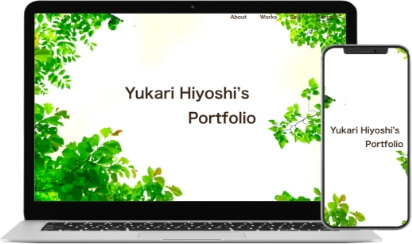
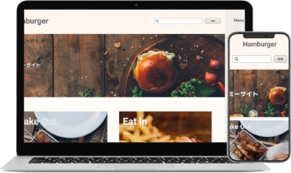

About
-
-
Yukari Hiyoshi
43歳東京出身。結婚を機に宮崎県諸塚村へ移住。2022年春から独学でWeb制作の学習開始。コーディングの楽しさを知り、更なるレベルアップを図る為に同年6月オンラインスクールRaiseTech「WordPress副業コース」に入る。同年10月に完走。その後、初案件獲得しました！今も自分のスキルを上げるべく、日々、学習しています。
日々の学習記録は、「BuildUp」にて更新しております。
Skill
-
セマンティックなマークアップの意識、Sassを使っての作業の効率化、さらにCSS設計(FLOCSS)を取り入れて、メンテナンス性のあるコーディングをするように心がけています。他にもレスポンシブ対応、アニメーション、ハンバーガーメニュー等の動きも実装出来ます。
-
オリジナルテーマの制作、プラグインを使っての実装の経験があります。
-
コードエディターにはVisual Studio Codeを使用しています。また、GitHubを使ってのバージョン管理、ソースコードの共有も出来ます。
-
デザインツールに関しては只今、学習中ですがAdobe XDとFigmaで作成されたデザインカンプからのコーディングが出来ます。今回のポートフォリオに関しましてはAdobe XDを使ってデザインカンプを作成しました。またPhotshopで写真の切り抜きなどの加工の経験はあります。

Works
-
My Portfolio
 自身のポートフォリオです。企画、デザイン、コーディング、WordPress化、サーバーへのデプロイまで行いました。セマンティックなマークアップ、保守性のあるCSS設計をするように意識して制作しました。
-
Hamburger-site
 RaiseTech「WordPress副業コース」の最終課題で制作しました。Adobe XDのデザインカンプからのコーディング、WordPress化、サーバーへのデプロイまで行いました。又、CSS設計にFLOCSSを学び、作業の効率化と保守性のある命名規則を意識しています。
-
RaiseTech
RaiseTech「WordPress副業コース」の2回目の課題で旧公式サイトの模写コーディングを行いました。デベロッパーツールの使い方、HTML/CSS/Sass/jQueryを学びながら制作していきました。